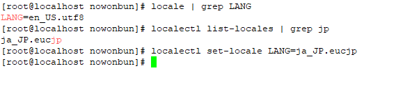
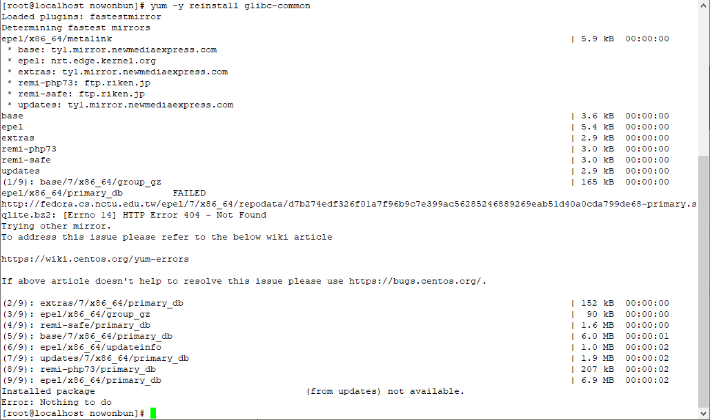
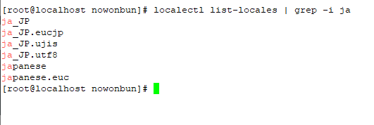
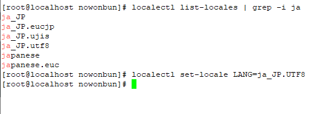
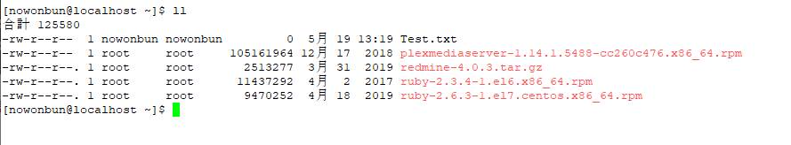

こんにちは。明月です。
CentOSをインストールする時に日本語でインストールする方もいると思いますが、普通では英語でインストールをします。
インストールする時に勝手に日本語名のディレクトリーができることがあるからです。最近はそうではないと思いますが。。
なので、英語でインストールしてユーザ別で文字セットを設定します。
文字セットをする方法では下記のコマンド名で修正します。
## 文字セット確認
locale | grep LANG
## 文字セットインストール確認
localectl list-locales | grep jp
## 文字セット変更
localectl set-locale LANG=ja_JP.UTF8

一応、私の場合は「ja_JP.eucjp」なので「ja_jp.utf8」をダウンロードしなければならないです。
## 文字セットを再インストール
yum -y reinstall glibc-common
localectl list-locales | grep -i ja


「ja_JP.utf8」があります。文字セットを変更しましょう。

リブートすると日本語がちゃんとできました。

そのあとでサーバーをリブートすると文字セットが変わっています。
文字セットを変わって文字化けになると下記のリンクを参考してください。
link - [Linux] Putty使用方法
上のリンクを参考すると解決します。
「Devlopment note / Linux」の他投稿
- [Ubuntu] Chromeをインストールする方法2019/11/06 19:48:19
- [CentOS] YUMについて、YUMが出来ない場合処理方法2019/11/05 07:17:58
- [CentOS] MariaDB(Mysql)をインストール2019/11/04 18:35:10
- [CentOS] FTPインストールする方法(vsftpd)2019/11/01 07:29:57
- [CentOS] SAMBAインストール方法2019/10/30 07:38:57
- [CentOS] PHPインストールする方法2019/10/29 20:09:03
- [CentOS] ApacheとTomcatの連携2019/10/29 07:28:33
- [CentOS] Tomcat インストール方法2019/10/28 22:38:56
- [CentOS] Java インストール2019/10/28 00:22:32
- [CentOS] apacheをインストールする方法2019/10/25 21:43:27
- [Linux] ディスク使用率チェック(df, du, lsof)とdfバグを解決方法2019/10/24 21:46:31
- [CentOS] Wheel設定2019/10/23 23:53:40
- [CentOS] システムの文字セット変更2019/10/21 16:58:39
- [CentOS] Vim編集ツールをインストールする方法2019/10/21 00:24:44
- [Linux] Putty使用方法2019/10/20 00:42:54
最新投稿
- [Project design] 基本設計(画面設計とDB設計)2021/10/17 21:21:11
- [Design pattern] 1-4. デザインパターンの抽象ファクトリーパターン(Abstract factory pattern)2021/10/15 19:31:03
- [Project design] 要件定義(要求事項整理)2021/10/15 19:28:58
- [C#] 52. Reflection機能を使い方 - Variable2021/10/15 19:27:37
- [Project design] プロジェクトを工程(ウォーターフォール vs アジャイル)2021/10/14 18:36:04
- [C#] 51. Reflection機能を使い方 - Method2021/10/14 18:34:21
- [C#] 50. Reflection機能を使い方 - Class2021/10/13 18:34:13
- [C#] 49. Operator(演算子)のオーバーロードを使い方2021/10/12 18:28:42
- [C#] 48. IEnumerableとIEnumerator、そしてyieldキーワード2021/10/11 19:49:33
- [C#] 47. Nugetを使い方(外部ライブラリ)とデータベース(MariaDB(Mysql))を使い方、そしてトランザクション(Transaction)2021/10/08 18:58:57
- [Window] MariaDBをインストールする方法2021/10/08 18:56:05
- [C#] 46. データベース(MSSQL)に接続する方法2021/10/07 18:39:58
- [C#] 45. ネットワークソケット通信(Socket)を使い方2021/10/06 19:06:25
- [C#] 44. ファイル(FileInfo)とディレクトリ(DirectoryInfo)を扱い2021/10/05 19:29:34
- [C#] 43. ストリーム(Stream)とバイナリ(byte[])、エンコード(Encoding)、そしてusingを使い方とIDisposableインターフェース2021/10/04 18:33:04